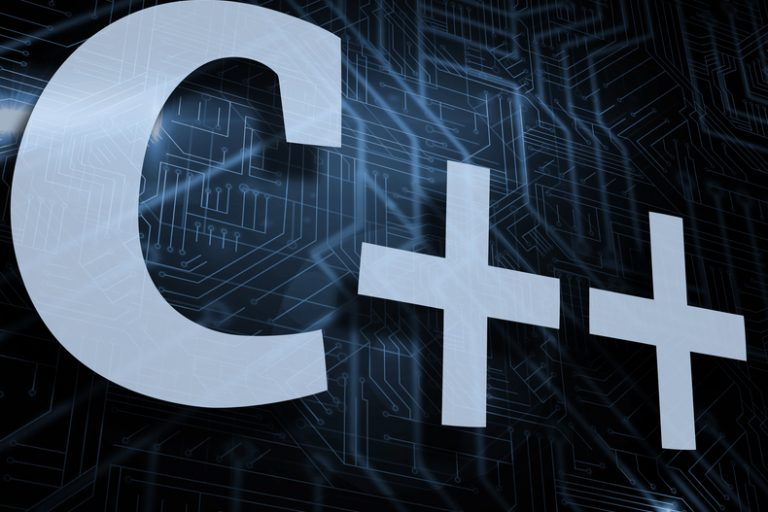
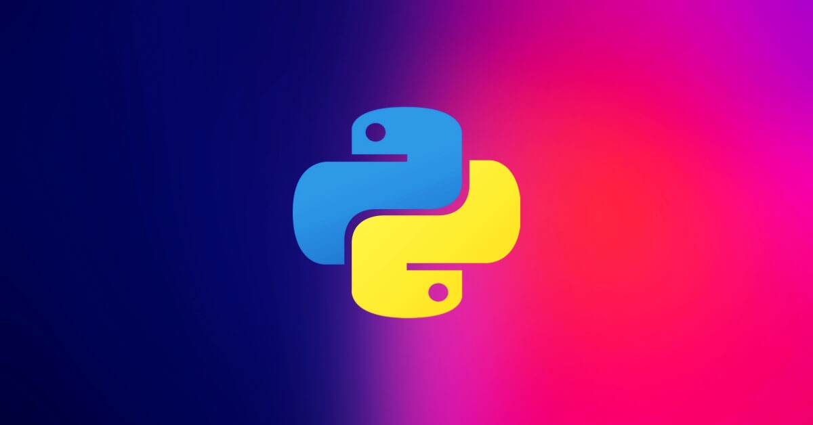
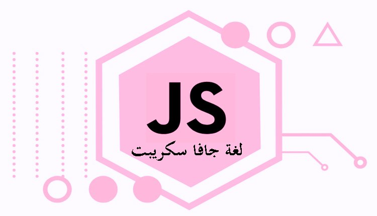

لغة البرمجة C هي لغة شعبية ومنتشرة بشكل لا يصدق، ومن السهل معرفة سبب ذلك؛ حيث تعتبر البرمجة بلغة C فعّالة، وتمنح المبرمج قدراً كبيراً من السيطرة. وقد وضِعَت العديد من لغات البرمجة الأخرى مثل ++C، جافا Java، وبايثون Python باستخدام C. ما هي لغة البرمجة Cإنّ أبسط طريقة لتعريف لغة البرمجة C هي أن ندعوَها بلغة البرمجة الحاسوبيّة، ما يعني أنّه بإمكانك كتابة برامج يستطيع الحاسوب تنفيذها باستخدام هذه اللغة. ما رأيك في هذه اللغة؟ 👇 👈 لمزيد من المعلومات اضغط على الصورة.
لغة سي بلس بلس ++C تعتبر واحدة من لغات البرمجة القديمة والتي ما زالت واحدة من أفضل لغات البرمجة وأهمها على الإطلاق، كون لها استخدامات كثيرة للغاية وهي أحد أكثر لغات البرمجة المطلوبة في سوق العمل. سنستعرض في هذا المقال دليل شامل ل تعلم ++C من الصفر حتى الإحتراف. ما هي لغة ++C ؟ ++C هي لغة برمجة تجميعية ( Compiled ) و كائنية ( Object Oriented ) تضم العديد من مميزات لغات البرمجة عالية المستوى ( High Level ) و منخفضة المستوى ( Low Level ) و هذا يعني أنك قادر على فعل ما تشاء بها. ما رأيك في هذه اللغة؟ 👇 👈 لمزيد من المعلومات اضغط على الصورة. 
ما هي الجافا ؟ لغة الجافا java لغة برمجة عالية المستوى ابتكرها جيمس جوسلنج في العام 1991 وتم تطويرها في العام 1995 لبناء تطبيقات الويب والسيرفرات وتطبيقات سطح المكتب والروبوتات ومختلف الاجهزة .. وهي تعمل على جميع واهم انظمة التشغيل ك ويندوز ولينكس وماك ، وتعتبر من اشهر لغات البرمجة على الاطلاق واقواها .. ما رأيك في هذه اللغة؟ 👇 👈 لمزيد من المعلومات اضغط على الصورة.
لغة بايثون تعتبر واحدة من أشهر لغات البرمجة وأكثرها استخدام وتعدد لمجالات العمل كما أنها من اللغات التي ينصح بها لمن يريد البدء في تعلم البرمجة من الصفر بدون أي خبرة مسبقة. ما هي البايثون هي لغة برمجة كائنية التوجه عالية المستوى مفتوحة المصدر وهي لغة تفسيرية سهلة الكتابة بسيطة الفهم متعددة الأغراض. ما رأيك في هذه اللغة؟ 👇 👈 لمزيد من المعلومات اضغط على الصورة. 
ما هي لغة جافا سكريبت؟ هي لغة سكريبت برمجية أي أنها لا تحتاج إلى مترجم Compiler أو بمعنى آخر أن أكواد هذه اللغة موجودة بالفعل في البيئة أثناء وقت التشغيل لغة الجافا السكريبت تستخدم بكثرة مع لغة التصميم html وcss حيث تضفي هذه اللغة الهيئة الديناميكية لمحتوى صفحات الويب، كما أنها أنه بالإمكان استعمالها في معالجة المعلومات والتفاعل مع المستخدم مع عدم الحاجة إلى الوصول إلى الخادم. ما رأيك في هذه اللغة؟ 👇 👈 لمزيد من المعلومات اضغط على الصورة. 
ما هي لغة روبي Ruby تعتبر لغة روبي Ruby إحدى لغات البرمجة الموجهة للكائنات بالدرجةِ الأولى،ويكمن الهدف من تطوير هذه اللغة إلى اعتبارها وسيلة تفاهمٍ بين المبرمجين والحاسوب.تتسم لغة روبي بأنها تتشابه بشكلٍ كبيرٍ من حيث البنية مع لغات البرمجة الأخرى كلغة C ولغة جافا Java، ونظرًا لهذا التشابه فإن تعلم لغة روبي Ruby يعتبر أمرًا سهلًا للغاية بالنسبة لمبرمجي جافا وسي من حيث التعلم. ما رأيك في هذه اللغة؟ 👇 👈 لمزيد من المعلومات اضغط على الصورة.
تعرفنا في هذه الصفحة على بعض لغات البرمجة التي نستخدمها في برمجة الحواسب والأجهزة الإلكترونية الذكية أو القابلة للبرمجة،وبهذا الشكل نكون قد أحطنا ولو بالشيء اليسير بمفاهيم هذا العلم الواسع الذي يحتوي على معلومات لا يمكن حصرها، أتمنى أنكم قد استفدتم من هذه المعلومات الموجزة البسيطة، ولكم مني كل المحبة والمودة 😉😉😉